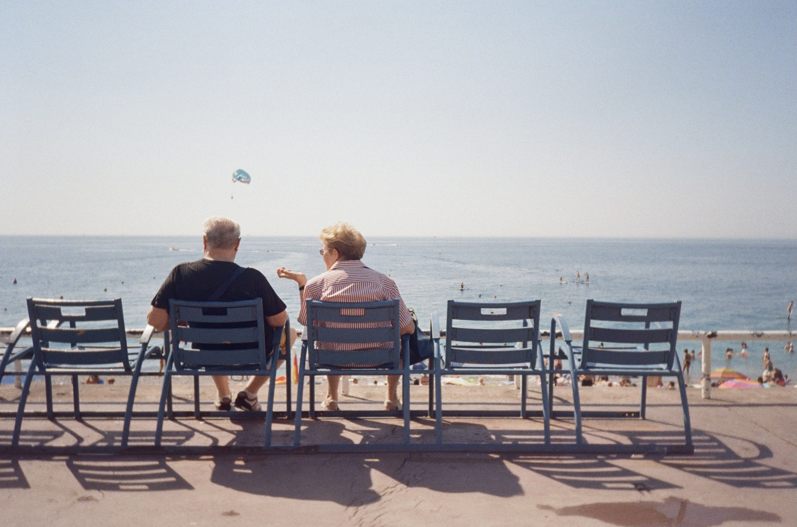

My photography aims to capture the stories hidden in the scenery of urban life, through the timeless medium of 35mm film. Film’s unique “one-shot” nature gives scenes a candor and honesty that is difficult to replicate through digital means.